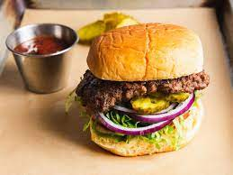

Hamburger Recipe

Description
Indulge in the classic goodness of a hamburger - a savory beef patty
nestled in a soft bun, adorned with fresh vegetables, cheese, and your
favorite condiments.
Ingredients
- Ground beef
- Hamburger buns
- Lettuce
- Tomato slices
- Onion slices
- Cheese slices
- Ketchup
- Mustard
- Salt and pepper, to taste
Steps
- Form ground beef into patties and season with salt and pepper.
- Cook the patties on a grill or stovetop until desired doneness.
- Toast the hamburger buns on the grill or in a toaster.
-
Assemble the burger: Place lettuce, tomato slices, and onion slices on
the bottom bun. Add the cooked patty and top with cheese.
- Add condiments like ketchup and mustard.
- Place the top bun on the ingredients to complete the burger.
- Enjoy your delicious homemade hamburger!